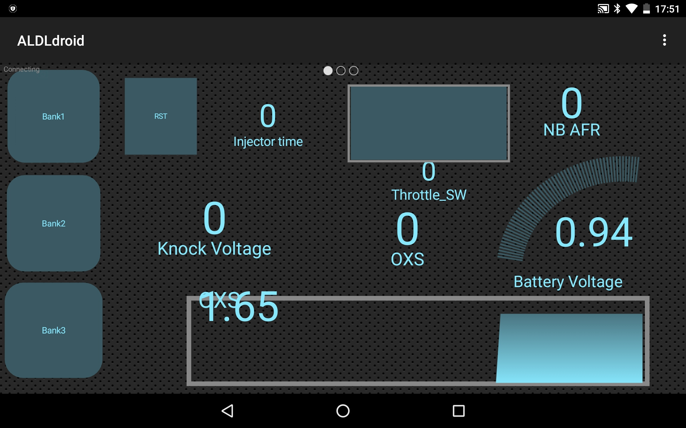
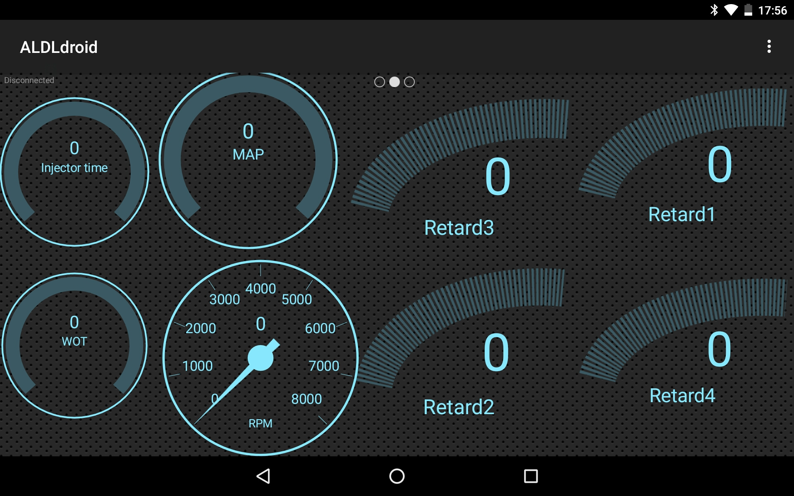

BASICS
This toolset can be split into three parts:
EMUBT
DOWNLOAD LINK
This is windows application which allows to upload new file for
emulation, select emulation bank and configure each bank individually.
Each part of this application has interactive help: hover your mouse
over each button, window or panel to display tooltip for each element.
TunerPro and ALDLdroid
TunerPro
DOWNLOAD LINK
TunerPro is very powerfull tool which allows to decode, display and
modify a program executed by ECU. ECU program contains all necessary
maps (fuel, ignition and other), vectors, flags etc and of course set
of procedures which drives the engine. In order to decode all maps
defined in ECU program (example here:
DigifantBinaryExample.bin) you need to provide
XDF
definition file to tunerPro. Note that there are few versions of
Digifant1 binaries and each may require its dedicated XDF file.
Having your binary file which runs in EMUBT emulation board and appropriate XDF file allows you to modify your maps or any other settings for your ECU.
Other powerfull feature of tunerPro is data logging and so called "hit data tracing". Hit data tracing means that it tracks feedback from ECU and shows in real time or during log playback at wich point of your selected map ECU operates at given moment. For Fuel or Ignition maps it will track RPM and MAP reading (RPM vs Engine Load). Check video below.
To make logging possible there is another file needed called
"Acquisition Definition File" and it is dedicated for device you are
using to to send data to tunerPro, EMUBT emulator board in this case.
EMUBT.adx
Try It !!
Here are the steps to check out out how data logging works on tunerPro with EMUBT board using some collected log file.
XDF->Select XDF
Acquisition->Load Definition File
File->Open Bin
Acquisition->Load Log File
Acquisition->Edit Definition File->Values
ALDLdroid
ALDLdroid is an Android appliction which does similar thing as tunerPro: allows to edit maps and receive data from EMUBT board. It also allows to configure some commands to control EMUBT board for example it is possible to switch Banks containing different binary file for emualtion (to switch different Digifant1 programs for emulation) without PC.
 This application is not free and is available in Google Play store and it is installed per account so you pay once and you can use it on any Android device you are logged in. To enable data logging in ALDLdroid you need to pair EMUBT bluetooth device and provide ALDLdroid adx file in ALDLdroid application.
EMUBT emulator board
Last missing puzzle is emulator board itself. Its main function is to emulate your old EEPROM chip. This board replaces the chip and can run in standalone mode without PC connected to it. You can turn off your engine and start it again and the board will emulate your program again because it uses non-volatile memory to store it, actully it can save three different programs for emualtion and it is possible to switch between those programs with EMUBT exe app or ALDLdroid.
Another feature of this board is data feedback described in sections
above in tunerPro and ALDLdroid. Digifant1 ECU doesn't provide any
kind of data feedback. Deep analysis of Digifant1 ECU and its program
allowed me to enable such feedback. It provides all analog sensor
reading like lambda sensor, intake manifold temperature, engine
coolant temperature, knock sensor reading and many more. More over it
is possible to retreive any data processed by ECU like knock
detection, additional advance related to knock reading which allows
you to tune your car, diagnose all sensors. Having tunerPro you can
modify your program and upload it to EMUBT board to improve the
perofrmance of your car.
All this works via Bletooth connection: reading and uploading
new file for emulation and data feedback.
..TO BE UPDATED..